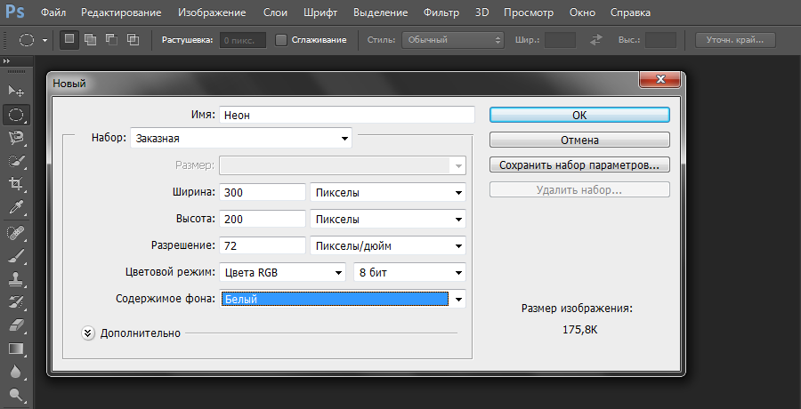
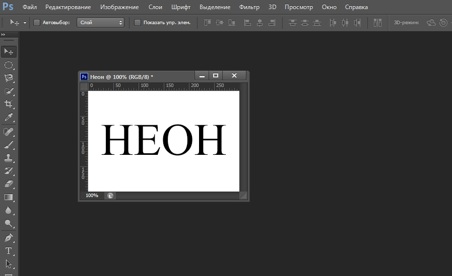
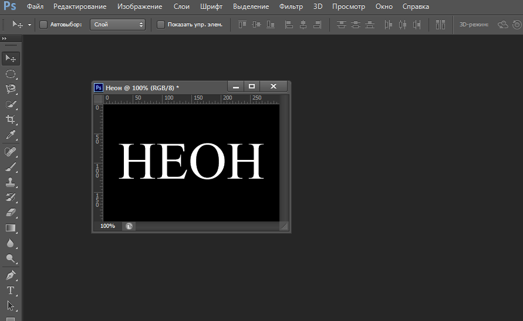
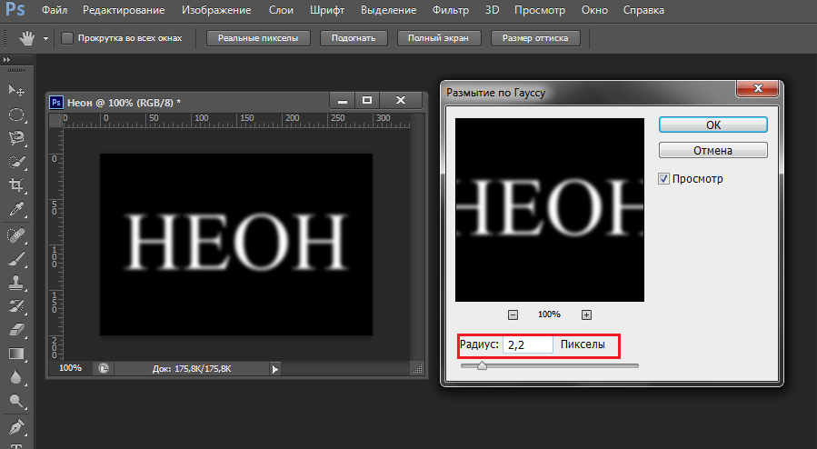
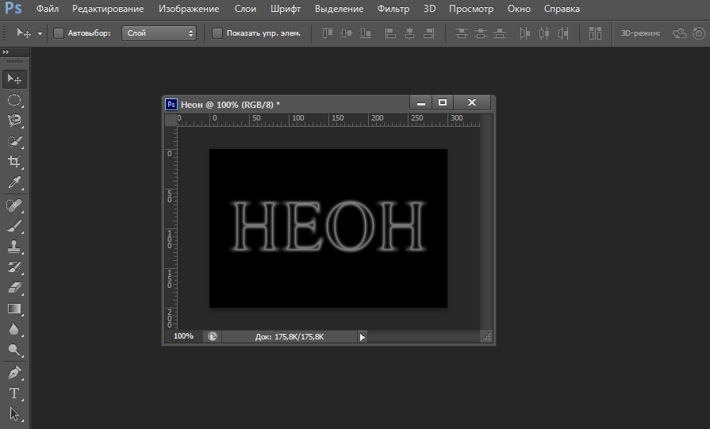
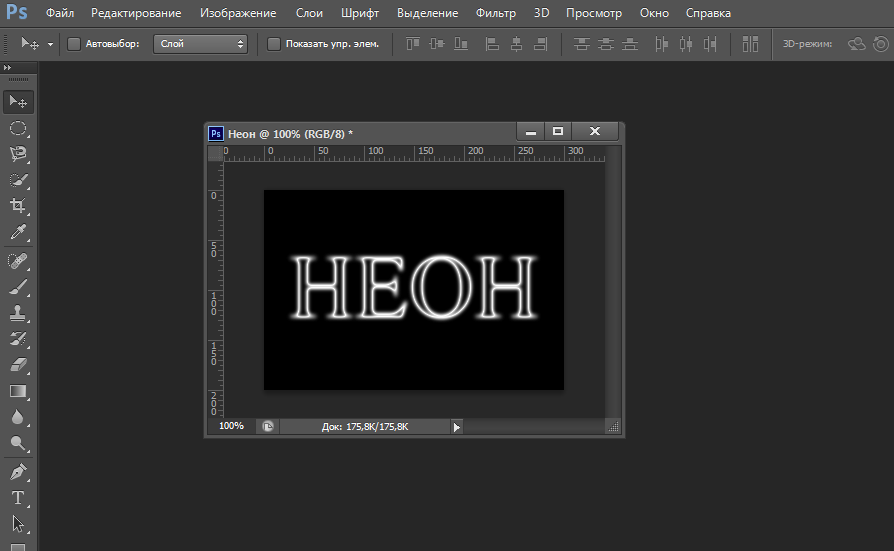
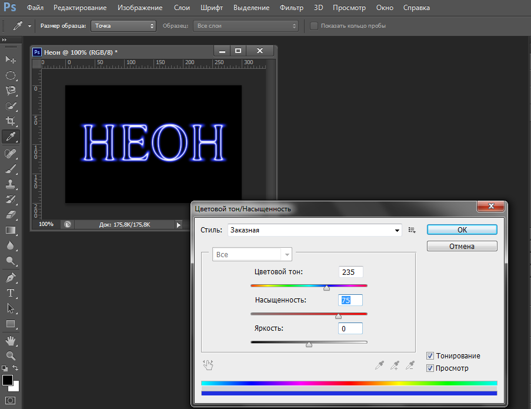

Теоретичний матеріал по виконанню практичних робіт
Створення неонового текстуНеобхідно спочатку створити нове зображення, тобто перейти на вкладку «Файл» та натиснути «Создать». Для прикладу створюємо зображення розміром 300х200 px.
Потім у лівій частині програми активуємо вкладку «Инструмент "Горизонтальный текст"» і вводимо будь-який текст.
Далі необхідно виконати зведення шарів, переходімо на вкладку «Слои» та натискаємо «Выполнить сведение».Потім відкріваємо «Изображение», вибираємо «Коррекция» і натискаємо «Инверсия».
Переходимо на вкладку «Фильтр», «Размытие» і обираємо «Размытие по Гауссу». Задаємо параметри які приведені за зображенні нжче:
Повертаємося на вкладку «Фильтр»,обираємо «Стилизация» і натискаємо «Соляризация».
Переходимо на вкладку «Изображение», «Коррекция» і натискаємо «Автоматическая цветовая коррекция».
На останньому етапі знову переходимо на вкладку «Изображение», «Коррекция» і натискаємо «Цветовой тон/Насыщенность». Далі обираємо кольори за власним бажанням. Назображенні нижче приведений один з прикладів вибору кольорів:
